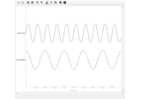
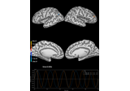
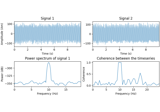

Simulation¶
These tutorials describe how to populate MNE-Python data structures with arbitrary data, using the array-based constructors and the simulation submodule.

Creating MNE-Python data structures from scratch
Creating MNE-Python data structures from scratch

Corrupt known signal with point spread
Corrupt known signal with point spread

DICS for power mapping